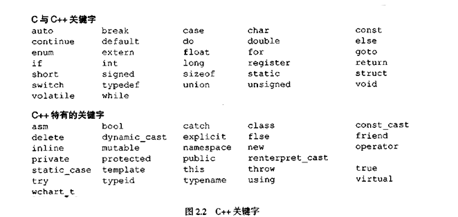

ITEEDU
第2章 控制结构
教学目标
2.1 简介
编写解决特定问题的程序之前，首先要彻底了解问题并认真计划解决问题的方法。编写程序时，还要了解可用的基本组件和采用实践证明的程序结构原则。本章将讨论结构化编程的理论和原理的所有问题。这里介绍的技术适用于大多数高级语言．包括C++。第6章在介绍C++面向对象编程时，将会介绍如何用第2章介绍的控制结构帮助建立和操作对象。
2.2 算法
任何计算问题都可以通过按特定顺序执行一系列操作而完成。解决问题的过程(procedure)称为算法(algorithm)，包括：
1．执行的操作(action)
2．执行操作的顺序(order)
下例演示正确指定执行操作的顺序是多么重要：
考虑每个人早晨起床到上班的“朝阳算法”：(1)起床，(2)脱睡衣,(3)洗澡，(4)穿衣，(5)吃早饭，(6)搭车上班。
总裁可以按这个顺序，从容不迫地来到办公室。假设把顺序稍作调换：(1)起床，(2)脱睡衣，(3)穿衣，(4)洗澡，(5)吃早饭．(6)搭车上班。
如果这样，总裁就得带着肥皂水来上班。指定计算机程序执行语句的顺序称为程序控制(programcontrol)，本章介绍C++程序的控制功能。
2.3 伪代码
伪代码(pseudocode)是人为的非正式语言，帮助程序员开发算法。这里介绍的伪代码在开发的算法转换为结构化C++程序时特别有用。伪代码类似于日常英语，方便而且容易掌握，但不是实际计算机编程语言。伪代码程序并不在计算机上实际执行，而是帮助程序员先“构思”程序．再用C++之类的实际计算机编程语言编写。本章介绍几个如何在开发结构化C++程序时有效利用伪代码的例子。
我们介绍的伪代码完全由字符构成，程序员可以用一个编辑器程序方便地输入伪代码程序，计算机可以在需要时显示伪代码程序。认真构思的伪代码程序可以方便地变为对应的C++程序。很多情况下，只要将伪代码语句转换成对应的C++语句即可。
伪代码只包含执行语句，将伪代码程序变为对应的C++程序时，这些语句可以运行。声明语句不是执行语句。例如，下列声明：
int i;
只是告诉编译器，变量i的类型是整型，指示编译器在内存中为这个变量保留内存空间。
但这个声明并在执行程序时不做任何操作(如输入、输出或计算)。有些程序员在伪代码程序开头列出变量及其简要说明。
2.4 控制结构
通常，程序中的语句按编写的顺序一条一条地执行，称为顺序执行(sequential execution)。程序员可以用稍后要介绍的不同C++语句指定下一个执行的语句不是紧邻其后的语句，这种技术称为控制转移(transfer of control)。20世纪60年代，人们发现，软件开发小组遇到的许多困难都是由于控制转移造成的。goto语句使程序员可以在程序中任意指定控制转移目标，因此人们提出结构化编程就是为了清除goto语句。
Bohm和JMoP5n1的研究表明，不用goto语句也能编写程序。困难在于程序员要养成不用goto语句的习惯。直到20世纪70年代，程序员才开始认真考虑结构化编程，结果使软件开发小组的开发时间缩短、系统能够及时交付运行并在颅算之内完成软件项目。这些成功的关键是．结构化编程更清晰、更易调试与修改并且不容易出错。
BohM和J“jecopini的研究表明，所有程序都可以只用三种控制结构(control structure)即顺序结构(sequence structure)、选择结构(selection structure)和重复结构(repetitionstructure)。顺序结构是C++内置的，除非另外指定，计算机总是按编写的顺序一条一条地执行。图2.1的流程图(flowchart)演示了典型的顺序结构．按顺序进行两次计算。
流程图是算法或部分算法的图形表示。流程图用一些专用符号绘制，如长方形、菱形、椭圆和小圆，这些符号用箭头连接，称为流程。
和伪代码一样，流程图也用于开发和表示算法，但伪代码更受欢迎。流程图能清楚地表示控制结构如何操作．本书用流程图表示控制结构如何操作。
考虑图2.1所示的流程图。我们用矩形框(或称为执行框)表示各种操作，包括计算、输入和输出操作。图中的流程表示进行操作的顺序，首先将grade加进total，然后将counter加1。C++允许顺序结构中有多个操作，稍后可以看出，可以放一个操作的地方，也就可以放几个顺序操作。
绘制表示完整算法的流程图时，椭圆框加上其中的“Begin”(开始)字样表示流程图开始，椭圆框加上其中的“End”(结束)字样表示流程图结束。只画部分算法时(如图2.1)，省略椭圆框，只用小圆框，也称接头框。
最重要的流程图符号是菱形框，也称为判断框，表示要进行判断。下一节将介绍菱形框。
C++提供三种选择结构，本章将介绍这三种选择结构。if选择结构在条件为true时执行一个操作，在条件为false时跳过这个操作。if/else选择结构在条件为true时执行一个操作，在条件为false时执行另一个操作。swutch选择结构根据表达式取值不同而选择不同操作。
if选择结构称为单项选择结构(single—selection，structure)，选择或忽略一个操作。if/else选择结构称为双项选择结构(double-selection structure)，在两个不同操作中选择。switch选择结构称为多项选择结构(multiple-selection structure)，在多个不同操作中选择。C++提供三种重复结构while、do/while和for。if、else、switch、while、do和for等都是C++关键字(keyword)。这些关键字是该语言保留的，用于实现如C++控制结构等不同特性。关键字不能作为变量名等一些标识符。图2.2显示了完整的C++关键字列表。
-----------------------------------------------------------------------------------------------
----------------------------------------------------------------------------------------------
常见编程错误 2.1
用关键字作为标识符属于语法错误。
C++只有七种控制结构：顺序结构、三种选择结构和三种重复结构。每个C++程序都是根据程序所需的算法组合这七种控制结构。从图2.1中的顺序结构可以看出，每个控制结构的流程图使用两个小圆框，一个在控制结构入口点，一个在控制结构出口点。这种单入/单出控制结构(single-entry/single-exit control structure)使程序容易建立，只要将一个控制结构的出口与另一个控制结构的入口连接，即可组成程序。这点很像小孩子堆积木，因此称为控制结构堆栈(control-structure stacking)，还有另一种控制结构连接方法，称为控制结构嵌套(control-structure nesing)。